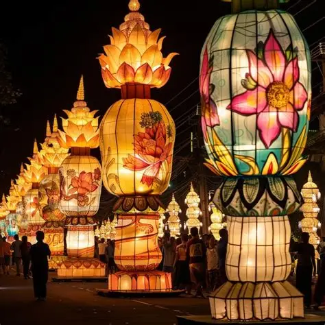
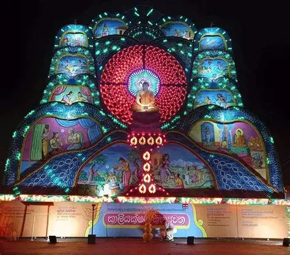
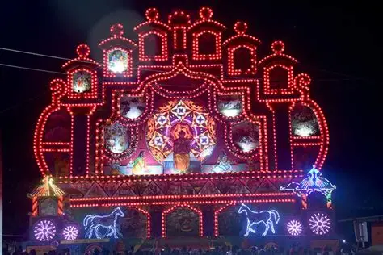
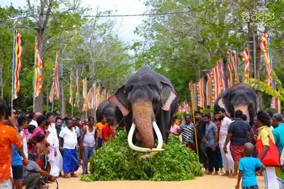

Sri Lanka’s temple festivals are vibrant cultural celebrations blending religion, tradition, and community spirit. The most famous include the Esala Perahera in Kandy, Vesak across the island, and the Kataragama Festival in the south, each marked by colorful processions, lanterns, and rituals. Major Temple Festivals in Sri Lanka Esala Perahera – Kandy (July/August) Held at the Temple of the Tooth Relic in Kandy. Features lavishly decorated elephants, Kandyan dancers, fire performers, and drummers. Symbolizes devotion to the Buddha’s sacred tooth relic. Ends with the ritual Diya Kepeema (water-cutting ceremony). Vesak Festival – Island-wide (May) Commemorates Buddha’s birth, enlightenment, and passing into nirvana. Streets and homes are decorated with Vesak lanterns (Vesak Kudu) and pandals depicting Jataka tales. Free food stalls (Dansal) are set up for pilgrims and visitors. Colombo and Kandy host the grandest displays. Kataragama Festival – South Sri Lanka (July/August) A multi-faith pilgrimage attracting Buddhists, Hindus, and Muslims. Devotees walk barefoot for days to reach the temple. Rituals include fire-walking, body-piercing, and offerings to the Hindu god Skanda. Sinhala and Tamil New Year – Mid-April Though not temple-specific, it is deeply tied to astrological rituals and blessings. Families visit temples, light oil lamps, and prepare traditional sweets like Kiribath and Kokis. Symbolizes renewal and harmony among communities.
Explore scenes from Sri Lanka’s most colorful temple celebrations.



